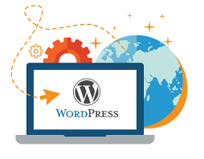

WordPress (WP or WordPress.org) is a free and open-source content management system (CMS) written in hypertext
preprocessor (PHP) language and paired with a MySQL or MariaDB database with supported HTTPS. Features include
a plugin architecture and a template system, referred to within WordPress as "Themes". WordPress was originally
created as a blog-publishing system but has evolved to support other web content types including more traditional
mailing lists and Internet fora, media galleries, membership sites, learning management systems (LMS) and online
stores. WordPress is used by 42.8% of the top 10 million websites as of October 2021.
WordPress was released on May 27, 2003, by its founders, American developer Matt Mullenweg
and English developer Mike Little,[7][8] as a fork of b2/cafelog. The software is released under the GPLv2
(or later) license.
To function, WordPress has to be installed on a web server, either part of an Internet hosting service like WordPress.
com or a computer running the software package WordPress.org to serve as a network host in its own right.
A local computer may be used for single-user testing and learning purposes.

WordPress Foundation owns WordPress, WordPress projects, and other related trademarks.
WordPress users may install and switch among many different themes. Themes allow users to change the look and
functionality of a WordPress website without altering the core code or site content. Custom code can be added
to the website by using a child theme. Every WordPress website requires at least one theme to be present.
Themes may be directly installed using the WordPress "Appearance" administration tool in the dashboard, or theme
folders may be copied directly into the themes directory.WordPress themes are generally classified into two
categories: free and premium. Many free themes are listed in the WordPress theme directory (also known as the
repository), and premium themes are available for purchase from marketplaces and individual WordPress developers.
WordPress users may also create and develop their own custom themes.